HC2 · THE COMPARE CARDS, ONE ABOVE THE OTHER
7 Oct 2026 · on a branch, nothing deployed, no table changed · Hub branch hub/hc2-compare-stacked-20261007 · “I don't want to swipe left to right — scrolling up to down.”
1 · BEFORE → AFTER (1680 × 1050)
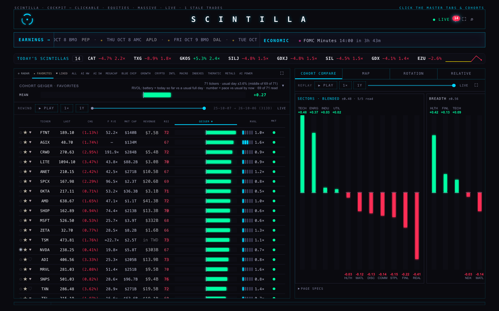
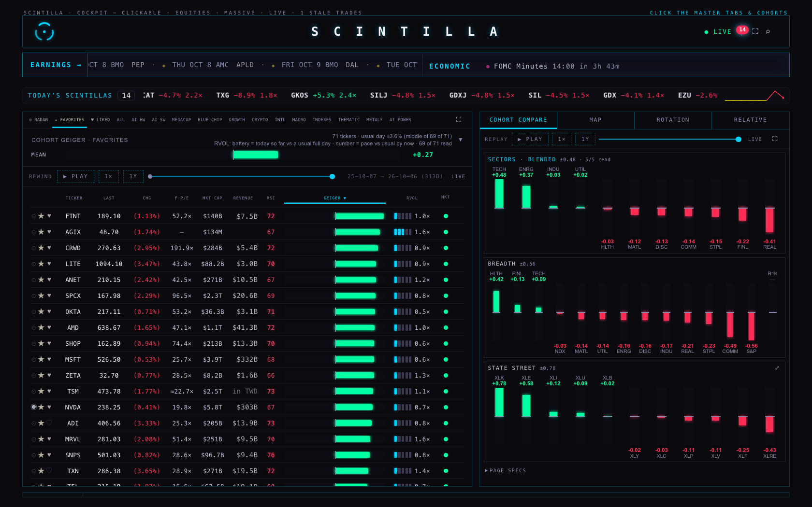
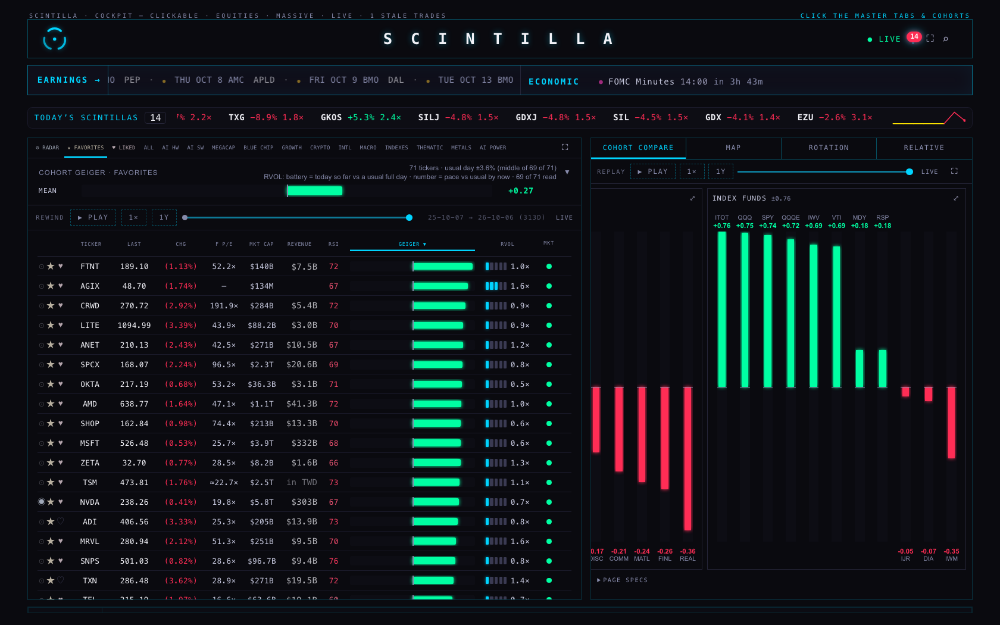
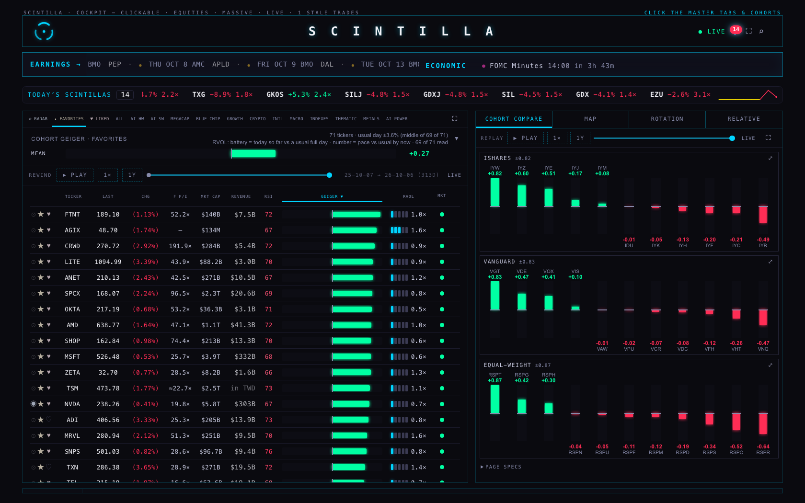
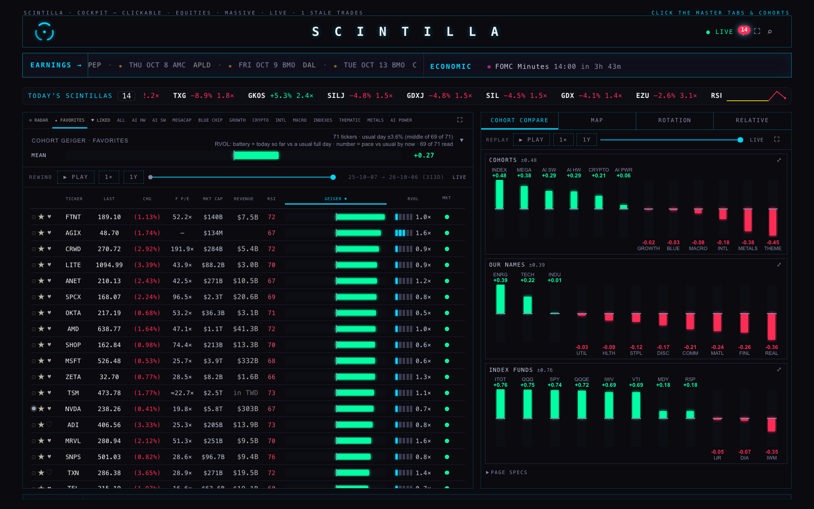
2 · ON THE PHONE (390)
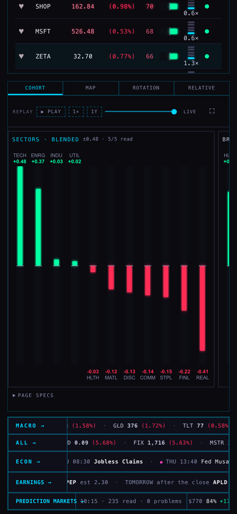
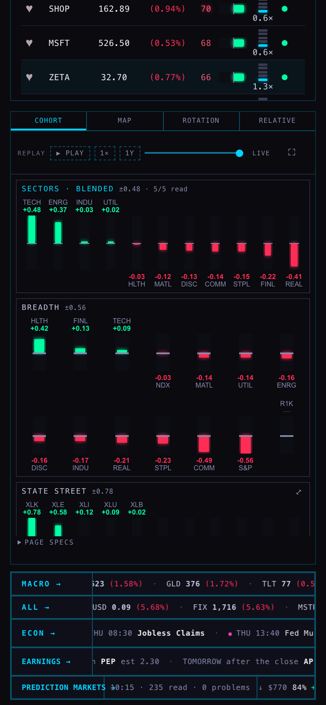
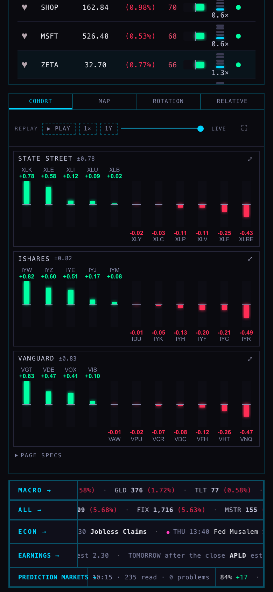
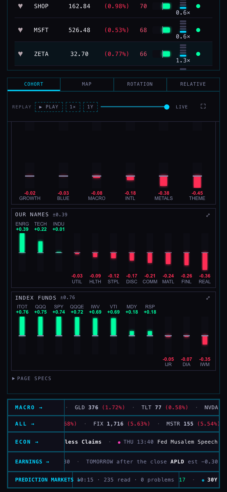
3 · HOW THIN
One size: a card takes a third of the panel's list (the part under REPLAY that scrolls). On the 1680 screen that is 208 px; the card was 640 px. Only the bars get shorter or taller with the window; names and numbers keep their size.
| screen | the list | a card | share of the list | tallest bar | cards showing |
|---|---|---|---|---|---|
| 1680 × 1050 | 656 px | 208 px | 31.8 % | 59 px | 3 whole |
| 1440 × 900 | 556 px | 176 px | 31.7 % | 48 px | 3 whole |
| 1280 × 800 | 490 px | 155 px | 31.7 % | 42 px | 3 whole |
| 390 × 844 (phone) | 433 px | 136 px · BREADTH, COHORTS: 214 px (two rows of bars) | 31.5 % | 32 px | 2 whole + part of STATE STREET |
| 1680 × 940 (a browser window with its toolbar) | 546 px | 172 px | 31.5 % | 40 px | 3 whole |
THINNER STILL — FOUR TO A PANEL (not built; a picture of the option)
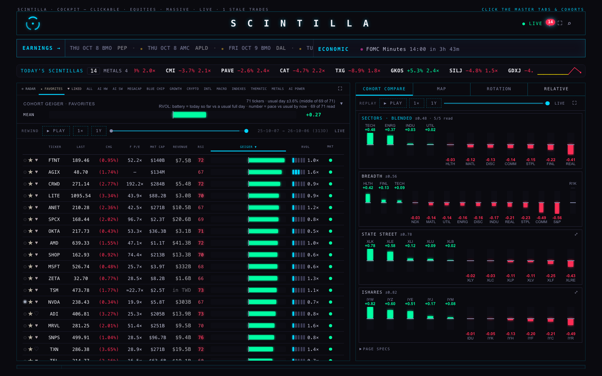
Four fit only when the window is the full 1050 px tall. In a browser window with its toolbar (1680 × 940) the fourth card is cut: 3 whole and part of iSHARES. Three fit whole in both.
RECOMMEND three. The bars are what you read; at four they are half the height.
Rows of sideways bars (one row per sector) were weighed and left out: eleven rows to a card is taller, not thinner.
4 · WHAT STAYED AS IT WAS
THE NUMBERS — live Hub and this branch, read in the same minute
| card | scale, live | scale, branch | bars the same | its first bars |
|---|---|---|---|---|
| SECTORS · BLENDED | ±0.48 · 5/5 read | ±0.48 · 5/5 read | 11 of 11 | TECH +0.48 · ENRG +0.37 · INDU +0.03 · UTIL +0.02 … |
| BREADTH | ±0.56 | ±0.56 | 14 of 14 | HLTH +0.42 · FINL +0.13 · TECH +0.09 · NDX -0.03 … |
| STATE STREET | ±0.78 | ±0.78 | 11 of 11 | XLK +0.78 · XLE +0.58 · XLI +0.12 · XLU +0.09 … |
| iSHARES | ±0.82 | ±0.82 | 11 of 11 | IYW +0.82 · IYZ +0.60 · IYE +0.51 · IYJ +0.17 … |
| VANGUARD | ±0.83 | ±0.83 | 11 of 11 | VGT +0.83 · VDE +0.47 · VOX +0.41 · VIS +0.10 … |
| EQUAL-WEIGHT | ±0.87 | ±0.87 | 11 of 11 | RSPT +0.87 · RSPG +0.42 · RSPH +0.30 · RSPN -0.04 … |
| COHORTS | ±0.48 | ±0.48 | 12 of 12 | INDEX +0.48 · MEGA +0.38 · AI SW +0.29 · AI HW +0.29 … |
| OUR NAMES | ±0.39 | ±0.39 | 11 of 11 | ENRG +0.39 · TECH +0.22 · INDU +0.01 · UTIL -0.03 … |
| INDEX FUNDS | ±0.76 | ±0.76 | 11 of 11 | ITOT +0.76 · QQQ +0.75 · SPY +0.74 · QQQE +0.72 … |
112 of 112 at 1680; 112 of 112 on the phone. The hover on the first bar, both pages: “TECH · blended +0.48 from 5 of 5 readings, each counting the same · State Street fund +0.78 (XLK) · fund and its equal-weight twin +0.82 (XLK + RSPT) · our names in the sector +0.23 (114 names) · the tree's close tier +0.28 (133 names, 2026-10-06) · sector ranking +0.28 (#3 on 2026-10-06) · index names +0.69, average stock +0.41: breadth −0.28 · scale ±0.48”.
THE ⤢ UNFOLD
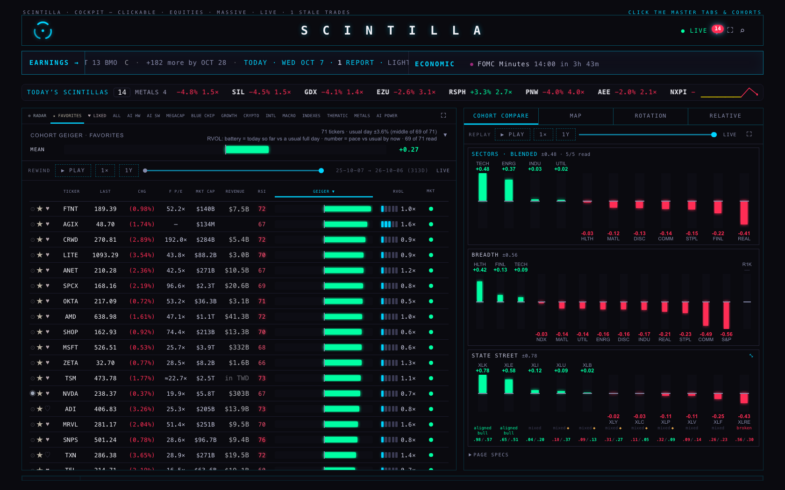
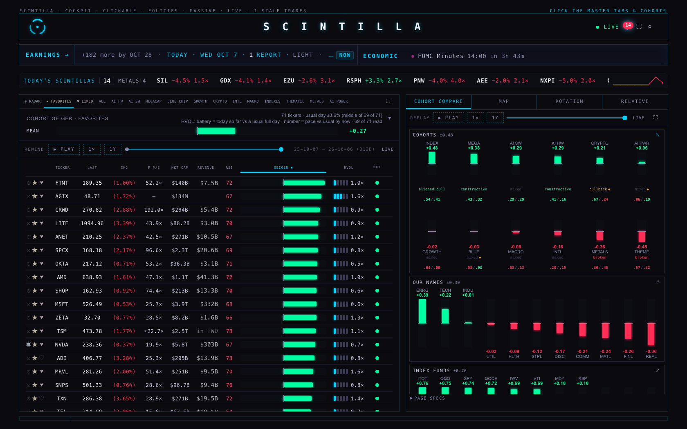
OUR NAMES unfolded wears its full names; the longest, INDUSTRY, is 40.7 px in a column of 42.7 (before the page's zoom). Cut: 0.
REPLAY
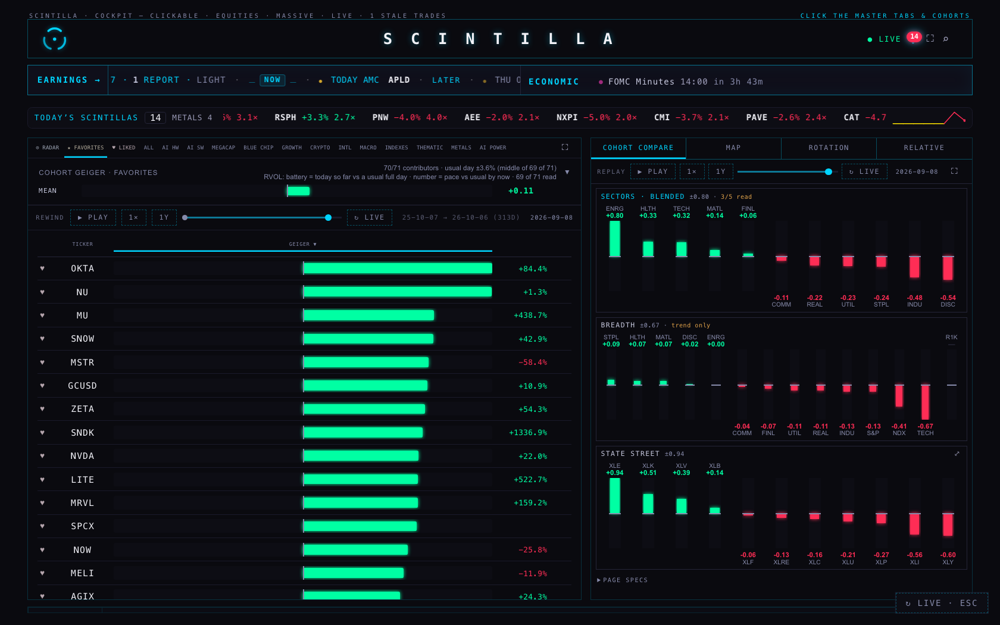
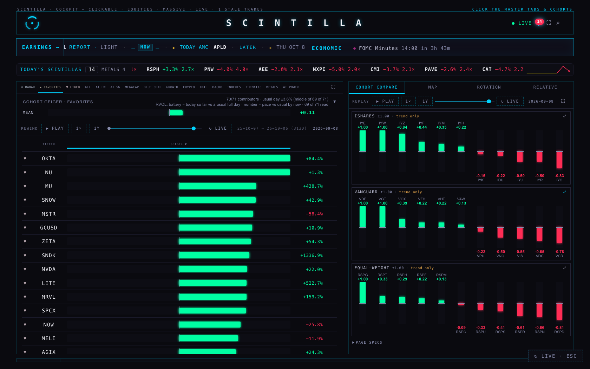
THE LIST KEEPS ITS PLACE
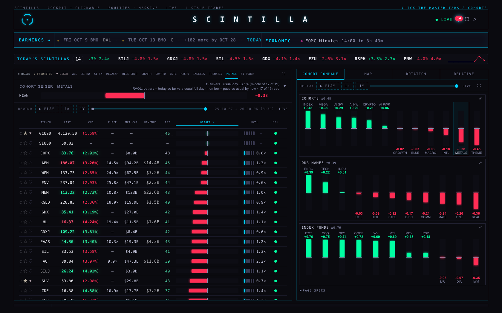
- A feed tick redraws the cards: the list stayed at 1013 → 1013.
- BREADTH is still BREADTH; the subtraction is the same.
- The FAVORITES-is-full line and the fixed Geiger bar scale were not touched; their tests still pass.
- Each card still prints its own scale (±) and stretches its tallest bar to the top.
5 · FULL SCREEN
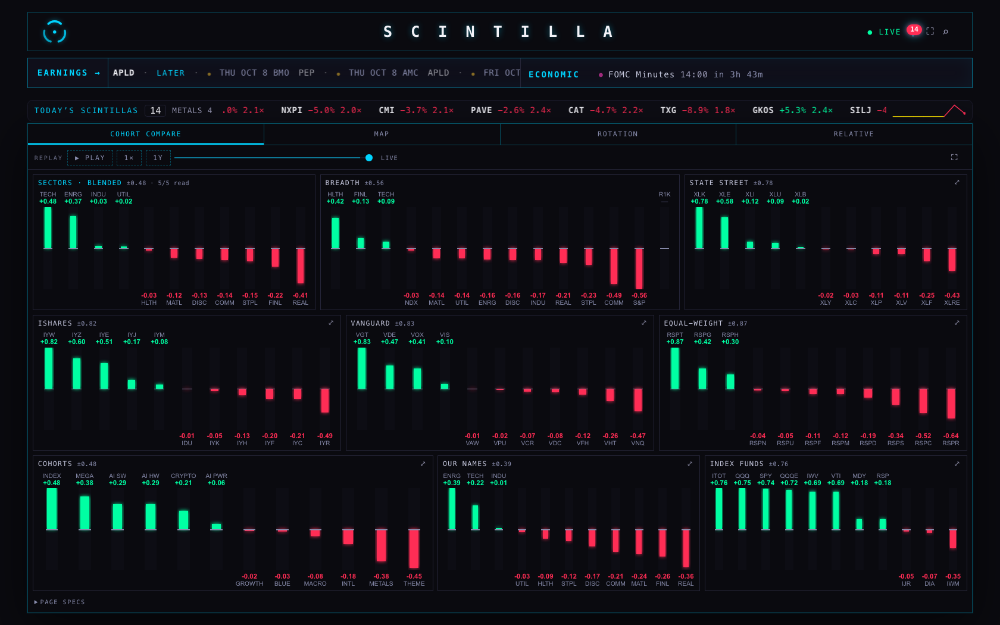
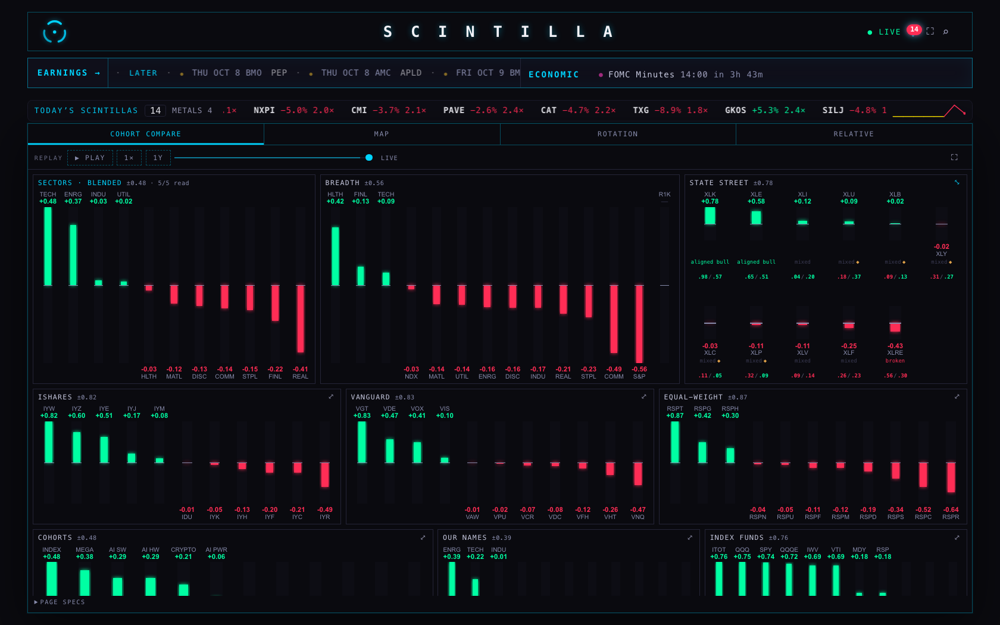
6 · WHAT COULD NOT STAY AS IT WAS
- Bars are shorter. The tallest is 59 px on the 1680 screen; it was 260. That is what thinner costs.
- An unfolded card no longer gets wider. It used to widen and the row scrolled. Now it keeps the panel's width: State Street and the other eleven-bar cards unfold in place; COHORTS (twelve) unfolds into two rows; on a phone, in a window narrower than 1280 px and in full screen every unfolded card takes two rows.
- On a phone BREADTH and COHORTS take two rows of bars. Fourteen and twelve bars do not fit one row of a phone without cutting the numbers.
- Zero lines line up inside a card, not across cards. Side by side they made one line; stacked, each card has its own.
- Full screen is three across. It was the same sideways row, only wider.
7 · NO SIDEWAYS SCROLL — EVERY SCREEN, EVERY STATE
| screen | as it opens | one screen down | at the end | State Street unfolded | replayed four weeks back | replayed, scrolled down | full screen | full screen, unfolded |
|---|---|---|---|---|---|---|---|---|
| 1680 × 1050 | 0 | 0 | 0 | 0 | 0 | 0 | 0 | 0 |
| 1440 × 900 | 0 | 0 | 0 | 0 | 0 | 0 | 0 | 0 |
| 1280 × 800 | 0 | 0 | 0 | 0 | 0 | 0 | 0 | 0 |
| 390 × 844 (phone) | 0 | 0 | 0 | 0 | 0 | 0 | 0 | 0 |
| 1680 × 940 | 0 | 0 | 0 | 0 | 0 | 0 | 0 | 0 |
px that can only be reached by scrolling sideways, added over: page, main, pane, paneBody, panel, list, cards. Names or numbers cut short in any of these: 0.
The widths in between were opened too — 1920, 1400, 1279, 1100, 901, 821, 360 px wide, each folded, unfolded, full screen and full screen unfolded (28 states): 0 px sideways, 0 names, numbers or words cut, 0 cards running over their box.
8 · NOT DONE, NOT VERIFIED
- One browser engine only: headless Chromium. Safari on the Mac and the iPhone were not opened. If a browser cannot work out the list's height, a card falls back to the height of its content: thinner, still one column, still no sideways scroll.
- Nothing is deployed and no table was written.
DECISIONS FOR ALAN
- Three cards to a panel, or four? RECOMMEND three, as built. Four is one number to change (section 3).
- Full screen three across, or one column there too? RECOMMEND three across: it is the one view with all nine at once.
PAGE SPECS
Every number on this page is read from data/capture-*.json, written by tools/capture.mjs; tools/build-page.py writes the page. BEFORE is the Hub as deployed (page de2402f7449b); AFTER is this branch's files served at the same address (page df17fe82c9b1; the branch's index.html is df17fe82c9b1).
Headless Chromium only, never a window on screen. Every request that was not a GET would have been stopped and counted: 0 were. Console errors across the 7 runs: 0.
A card's height is its share of the list: (the list less its 6 px padding top and bottom, less the 6 px between cards) ÷ 3 — 31.8 % of the list. A bar's track is never under 44 px before the page's own zoom; where a third of the list would squeeze it, the card keeps its content's height and the list shows a little less than three.
Bars to a row: a window 1280 px wide or more, one row (an unfolded card of more than eleven columns takes two). Narrower, down to a phone: more than eleven columns, or unfolded, takes two rows. Full screen from 1280 px: three cards to a line, each card's share of the line its share of the line's columns; a cohort column counts 1.4.
The cards draw what HC1's cards drew: tests/fixtures/hc1-cards-b80c01e.json holds the release's cards in five states (tools/make-fixture.mjs), and tests/hc2-compare-stacked.test.mjs draws the same states with this page and compares them card for card.